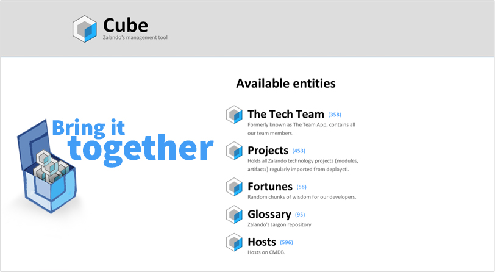
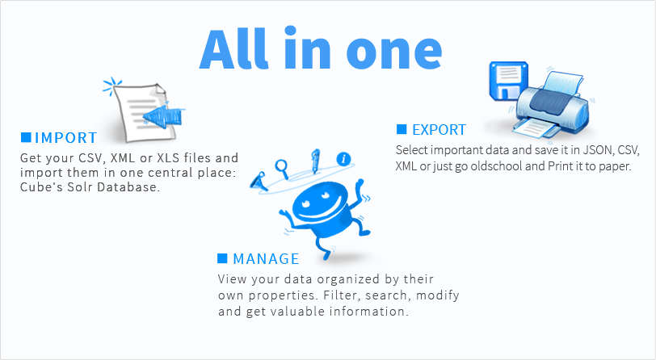
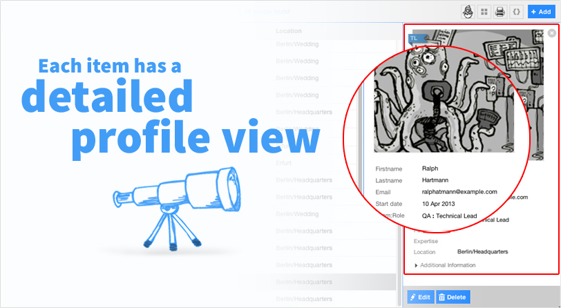
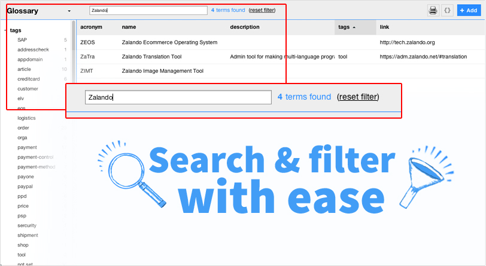

- 
- 
- 
- 
Description
The Cube is a NodeJs + BackboneJs application that presents your data in an organized way and gives you a set of tools to manage it. From importing it into the Solr database, to updating it through its web interface (select, sort, search, filter, add, edit or remove) and exporting it into a JSON, XML or CSV file or just printing it to paper. The cube has become one of our daily used apps for everyone here at Zalando's Technology department and we want to share it with you; it is now Open Source!
Installation
Automated
Requirements: JDK (>= 1.6)
$ wget http://zalando.github.io/cube/install.sh
$ bash install.sh
Manual
Requirements: JDK (>=1.6), Maven (2.2), NodeJs (>=0.8) and ImageMagick (>=6.8.0)
$ git clone git@github.com:zalando/cube.git
$ cd cube
$ npm install .
Build and run the Solr Database
$ mvn clean install tomcat:run-war -Pdevelopment
Start the Cube on a new terminal
$ cd cube
$ coffee cube.coffee
Open it in your favorite browserhttp://localhost:3000
How To make your own Cube
Once you got the included example up and running, it will be easy to set up the cube to handle your own data. In the following small tutorial, I'll show you how to store your books collection in the cube. As you will see, its basically a matter of writing a schema and editing a couple of config files.
-
Add a new solr core
Add a core tag in solr/solr/solr.xml file. At the end it should look something like this
<?xml version="1.0" encoding="UTF-8" ?> <solr sharedLib="lib" persistent="true"> <cores adminPath="/admin/cores"> <core name="team" instanceDir="conf/cube/" dataDir="conf/cube/team" /> <core name="library" instanceDir="conf/cube/" dataDir="conf/cube/library" /> </cores> </solr> -
Start Solr
$ cd cube/solr/
$ mvn clean install tomcat:run-war -PdevelopmentYou should have a new core called "library" by now. This is where all your library collection will be stored. Check it out on http://localhost:38730/cube-solr.
-
Add it to the list
Open the file called entities.json and add it to the array
[ "team", "library" ] -
Create the entity's files
$ cd util/
$ ./create_entity library -
Configure
-
Schema
The Schema is one of the most important aspects of your entity. We recommend you to spend some time checking out the one provided in the example along with its documentation.
Please check the Schema reference here.
For this example, I provide you with a schema. Get it from here and place it in entities/library/
$ cd cube/entities/library
$ wget http://cubeapp.io/schema.json -
Database config
Configrue entities/library/db.json to point to the new Solr core
It should look something like this:
{ "host": "localhost", "port": "38730", "core": "library", "path": "/cube-solr" } -
Entity Information
We need to provide some information about the entity along with some settings. Please take a look at entities/library/settings.json. It should look something like this:
{ "entity": "library", "title": "Library", "description": "My huge book collection", "itemType": [ "book", "books" ], "separator": "/", "view": "list", "rows": 50, "sort": "title:asc" }
-
-
Start NodeJs
$ coffee cube.coffee
-
Visit your library
-
Add your books!
Click
 on the top right corner and start adding your books!
on the top right corner and start adding your books!
Documentation
As mentioned before, the Cube is composed of a NodeJs backend, a Solr database and a BackboneJs frontend. If you're familiar with these technologies it shouldn't be much of a hassle to get around this app. Plus, annotated source code documentation generated with doccu can be found here.
Schema reference
One of the main tasks when creating your own entity is writing a Schema. A Cube Schema is a json array of objects that describe the data structure of a collection of data. You can take a look at an example schema which makes uses of almost all possible properties. Setting up yours is a matter of listing the fields you want your items to have with their IDs, Labels and a custom set of properties like field type (img, email, facet, etc).
Available Properties
id – Each field must have a unique ID composed of alphanumeric characters. This field is required.
String
label – IDs are not necessarily pretty or even human readable. A label is a must. Alphanumeric characters and spaces.
Value type: String
type – The type field specifies which data type this field contains. It tells the cube how to store this value and also how to display it. Default (no type property specified) is String. Other data types are:
integer – Stores (of course) integer numbers, not strings.
float – Store float numers. When displayed floats are rounded to 2 digits.
facet – This field will act as a facet field. It will appear on the facet index, listing all values that your items have in this field, along with a count of items with each value.
tuple – A tuple of facet fields, related to each other. i.e. in the team example, roles are related to teams in the tuple team:role field.
img – Image field. Items can have only one image field. This will be displayed as the profile picture on the profile view, it will activate the thumbnail view and it will be displayed as a small 25x25 pic on the list view.
email – Stores emails and renders them as clickable emailto: links.
skype – Stores skype usernames and renders them as clickable skypeto: links to open a chat window.
multiline – Multiple line field, renders a textarea instead of an input field.
dropdown – Shows you a <select> element, showing you a list of selectable options. This field will require you to define the options in an array under the property "options".
date – Shows a date and attaches a date picker for input.
Value type: String ( "facet" | "tuple" | "img" | "email" | "skype" | "multiline" | "dropdown" | "date" )
mandatory – Mark field as required for form validation when adding/editing items.
Value type: Boolean (true | false)
search – Mark field as searchable. This means that any search performed on the input search will try to match the values on this field.
Value type: Boolean (true | false)
index – Field default visibility in the table view.
Value type: Boolean (true | false)
thumbnail – Show field value as footer for items in Thumbnail view mode.
Value type: Boolean (true | false)
multiedit – Editable on many items at once. Field will appear on the multiedit form.
Value type: Boolean (true | false)
hidden – Hides field from profile view.
Value type: Boolean (true | false)
additional – This field will be part of the additional fields and will be showed at the bottom of the profile view, hidden inside the 'Additional info' section.
Value type: Boolean (true | false)
Type specific properties
Field Type: Facet
specials – Each facet is splitted in two areas, separated by a gray line. Define this property with an array of strings and each facet field that matches will be displayed below the line.
Value type: Array [ "name1", "name2", ... ]
classifier – Defines this field as the category to sort items on thumbnail view. The order of this array will determine the order of the sections on that view.
Value type: Array [ "name1", "name2", ... ]
order – Define the order of the facet fields. If not specified, fields will be sorted alphabetically.
Value type: Array [ "field1", "field2", ... ]
collapse – Define wich facets should render collapsed initially. Once you click on them, the state is stored in localStorage, overriding this setting.
Value type: Boolean (true | false)
Field Type: Dropdown
options – Required property for any dropdown tipe field, defined as an array of strings for the availablo options in the dropdown menu.
Value type: Array [ "name1", "name2", ... ]
Contribution
Please visit our GitHub repository to get the code, report issues or request features. Feel free to send some pull requests ;)
http://github.com/zalando/cube